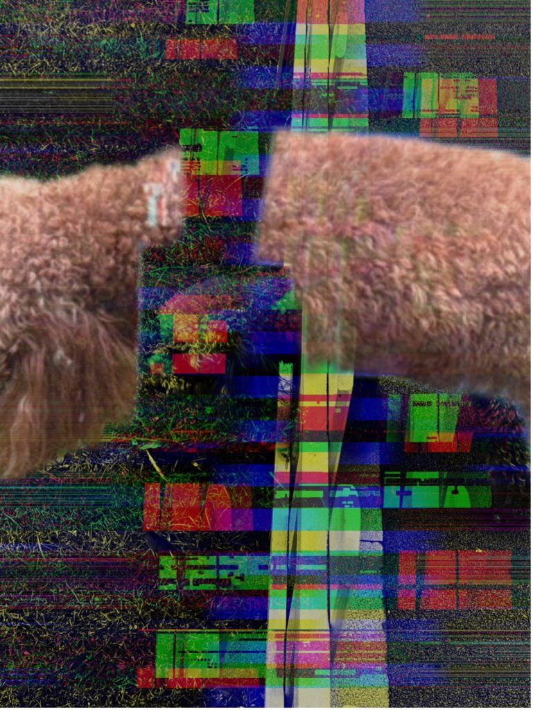
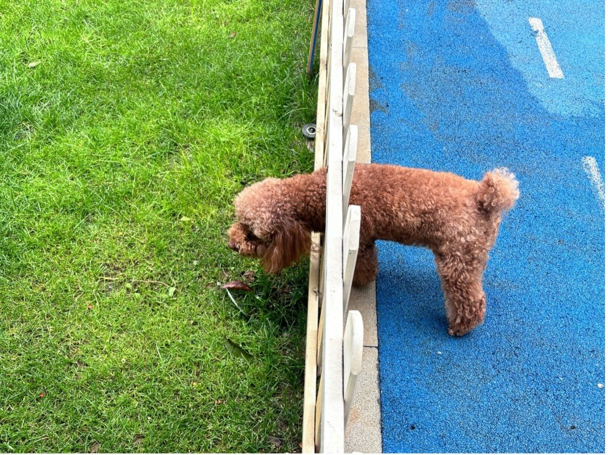

Overview
The goal of this exercise is to explore the artistic and aesthetic qualities of data bending, a form of glitch art. By deliberately treating images as audio data for manipulation, we attempt to explore how digital artifacts transform familiar visual content into abstract forms.

Process Description

I start with the original picture, which is a vibrant photo of a puppy. The picture is exported in RAW format through Photoshop. Then I import the RAW image file into Audacity as an audio track, using the “Import RAW” option to process the visual data as a sound waveform. After that, I tried various audio effects, including: Change Speed, Reverse and Equalisation & Echo.Finally, export the manipulated file from Audacity as a RAW audio file. Reopen the file in Photoshop, interpret it as an image, and set arbitrary dimensions during import to generate the final result.
The regenerated image stands in stark contrast to the original, presenting a unique visual effect. The original image depicts a dog beside a fence. It features clear visuals and natural colours. The green of the grass, the blue of the track, and the brown of the dog’s fur exhibit a realistic texture and soft colour tones.
In contrast, the regenerated image is filled with intense color blocks and digital distortion visual features. High – saturation colors such as red, green, and blue appear alternately, accompanied by horizontal strip – like interference, making the image seem like the result of data corruption. Although the outline of the dog is still visible, the details are damaged, with parts showing a blocky mosaic effect. The fence and the background, under the distortion of color and texture, appear more abstract, full of the futuristic style of glitch art.
The original image conveys a real and serene life scene, while the processed image is experimental and technological. Through Audacity data bending in this experiment, an ordinary life image has been transformed into an abstract art piece. This showcases the charm of the interweaving of technology and art. At the same time, it allows me to experience the unique visual language hidden in digital distortion and the potential of human intervention in re – defining media aesthetics.
This exercise demonstrates how digital tools can blur the boundaries between different media, transforming ordinary files into unique artworks. This process has made me aware of the vulnerability of digital media. By treating image data as sound, I disrupted its established structure and created entirely new art pieces. Interestingly, minor adjustments in Audacity settings can significantly alter the final image. This experience has helped me better understand the interaction between media formats and inspired me to explore the possibility of using data bending in future creative computing projects.